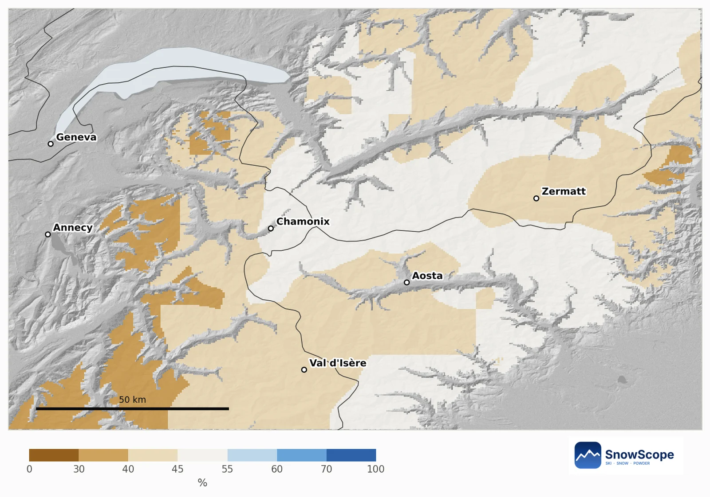
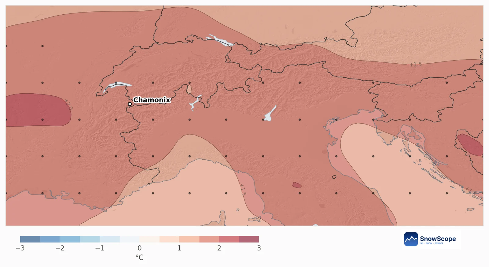
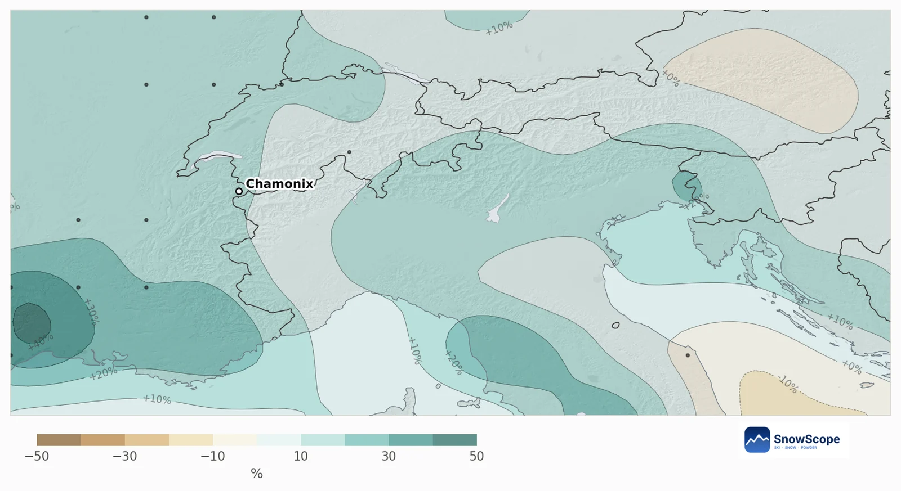
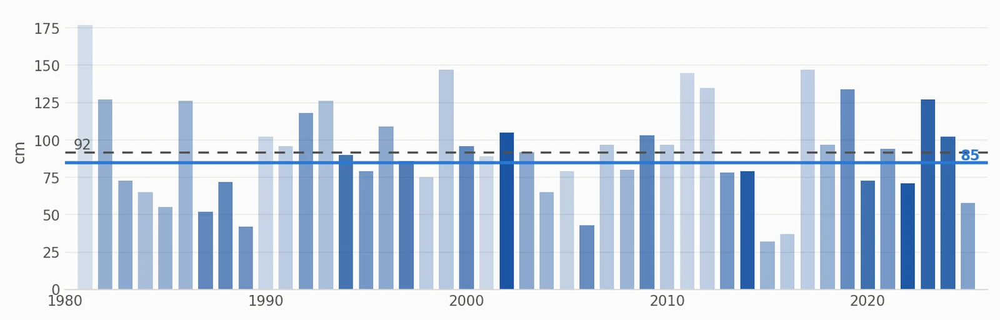

Chamonix im Dezember 2026: warmes Signal, nasses Signal, kein klares Schnee-Urteil
In Chamonix hat der Winter oben begonnen: 27 cm liegen am Gipfel der Grands Montets (2768 m), nach 15 cm in der letzten Woche. Für den Dezember zeigt die Saisonprognose einen wärmeren und etwas nasseren Monat, und rund um den Mont Blanc heben sich beide Effekte ungefähr auf.
Die Live-Schneeprognose für Chamonix in der SnowScope-AppSchneehöhen, Pulverschnee-Alarme und 3D-Karte, gratis.
Schnee heute
Die Schneegrenze liegt noch hoch. Auf 2001 m zeigt die Karte nur 1 cm, und die Talstation auf 1234 m ist aper, obwohl in den letzten sieben Tagen 10 cm an der Mittelstation fielen. Oben liegen 27 cm, und die nächsten sieben Tage könnten dort etwa 26 cm und an der Mittelstation 5 cm bringen.
Auf der Karte sind 47 % der 60 km rund um Chamonix weiß: das Mont-Blanc-Massiv und das hohe Wallis, nicht die Täler.
Mehr oder weniger Schnee? Meist kein klares Signal
Unsere Ausblickskarte vergleicht jedes Berggebiet von etwa 10 km mit seinen eigenen vergangenen Dezembern. Rund um den Mont Blanc zeigen 86 % der Bergfläche kein klares Signal, 14 % neigen zu weniger Schnee (vor allem die niedrigen Voralpen Richtung Annecy) und keine Fläche zu mehr.
An der Mittelstation in Chamonix liegt die Chance auf mehr Neuschnee als in einem üblichen Dezember bei 45 %. Ein üblicher Dezember bringt dort 68 cm Neuschnee; der Ausblick für dieses Jahr liegt bei 66 cm. Am 31. Dezember sind 92 cm üblich, der Ausblick liegt bei 85 cm, am wahrscheinlichsten zwischen 71 und 103 cm.

Was die europäische Prognose sagt
Die 51 Läufe des saisonalen Systems des Europäischen Wetterzentrums sind sich bei der Wärme einig: Im Mittel ist der Dezember im Gebiet 1,6 °C wärmer als üblich, und 84 % der Läufe sind wärmer. Der Niederschlag liegt 11 % über einem üblichen Dezember (128 mm), 65 % der Läufe sind nasser.
Wärme und Nässe ziehen in entgegengesetzte Richtungen. Oben fällt der zusätzliche Niederschlag weiter als Schnee; weiter unten bedeutet ein warmer Dezember mehr Regen und eine höhere Schneefallgrenze. In unseren 45 vergangenen Dezembern folgte der Schnee in dieser Höhe dem Niederschlag (Korrelation 0,94) viel stärker als der Temperatur, deshalb landet das Ergebnis nahe am Üblichen.


Vergangene Dezember wie dieser
Die Dezember, deren Wetter dieser Prognose am meisten ähnelte, sind 2002, 2022 und 2014. Beim Schnee waren sie nicht gleich, und das ist die ehrliche Botschaft: Die Prognose verschiebt die Chancen etwas, entscheidet den Monat aber nicht.
Plane zuerst mit dem hohen Gelände, nimm die tiefen Pisten als Bonus und verfolge vor der Buchung die 7-Tage-Prognose.

Tipps für Skifahrer
- Anfang Dezember: auf den Gipfel der Grands Montets und die Gletscherseite setzen, nicht auf die Talabfahrten.
- Ein warmer Dezember heißt hohe Regengrenze: in der 7-Tage-Prognose beobachten.
- Schalte in der SnowScope-Karte die Schneeebene ein, um die Schneegrenze Woche für Woche zu verfolgen.
Quellen und Nachweise
- ECMWF SEAS5 seasonal forecasts, Copernicus Climate Change Service (C3S) cds.climate.copernicus.eu/datasets/seasonal-postprocessed-single-levels
- ERA5 monthly averaged data, Copernicus Climate Change Service (C3S) cds.climate.copernicus.eu/datasets/reanalysis-era5-single-levels-monthly-means
Zu diesen Zahlen
Methode. Temperatur und Niederschlag: die saisonale Prognose des Europäischen Wetterzentrums (ECMWF SEAS5, 51 Läufe ab 1. November 2026, Abweichungen gegenüber den eigenen Rückprognosen 1993-2016, etwa 100-km-Raster). Schnee: Für jede Bergzelle von etwa 10 km nehmen wir unser Modell der Vergangenheit (46 Winter, höhenkorrigierte Schneehöhe) und das Wetter jedes Dezembers von 1981 bis 2025 (ERA5); vergangene Dezember, deren Temperatur und Niederschlag einem Prognoselauf ähneln, zählen mehr, und ihr Schnee ergibt die Chancen. Schnee heute: die SnowScope-Schneekarte (500 m). Ein Monatsausblick verschiebt nur die Chancen: Er sagt weder einen Sturm noch ein Datum voraus.
Diesen Bericht zitieren
Für Forschung, Lehre oder Presse: Zahlen und Grafiken sind unter CC BY 4.0 mit dieser Quellenangabe frei nutzbar.
SnowScope (2026), Chamonix im Dezember 2026: warmes Signal, nasses Signal, kein klares Schnee-Urteil, https://snowscope.app/blog/de/2026/11/chamonix-december-2026-snow-outlook.html, abgerufen am 2026-11-10
SnowScope (Atlas Labs). (2026, November 10). Chamonix im Dezember 2026: warmes Signal, nasses Signal, kein klares Schnee-Urteil. SnowScope snow reports. https://snowscope.app/blog/de/2026/11/chamonix-december-2026-snow-outlook.html
BibTeX
@misc{snowscope2026chamonixdecember2026snow,
author = {{SnowScope (Atlas Labs)}},
title = {Chamonix im Dezember 2026: warmes Signal, nasses Signal, kein klares Schnee-Urteil},
year = {2026},
month = nov,
howpublished = {\url{https://snowscope.app/blog/de/2026/11/chamonix-december-2026-snow-outlook.html}},
note = {Published 2026-11-10 09:29 UTC; accessed 2026-11-10}
}· CC BY 4.0 · Methoden, Daten und Werkzeuge →
Chamonix folgen
Gratis: eine Nachricht, wenn Neuschnee kommt, und jeden Morgen die Vorhersage.
Weitere Schneeberichte

Von den Walsern zum Weißen Ring: die Daten, die Lech Zürs geprägt haben, danach unsere Schneehistorie damals und heute, die ersten fünfzehn von 46 vergangenen Wintern gegen die letzten fünfzehn.

Kitzbühel ist berühmt und tief gelegen. Was 46 vergangene Winter über den Schnee auf 762 m, 1.377 m und 1.993 m sagen, was sich geändert hat und welche Wochen die sicherere Wahl sind.

Sieben Tage in der Silvretta Arena, einer nach dem anderen: wo der Schnee liegt, wann man nach Samnaun fährt und was 46 vergangene Winter über Ischgls Schnee auf drei Höhen sagen.